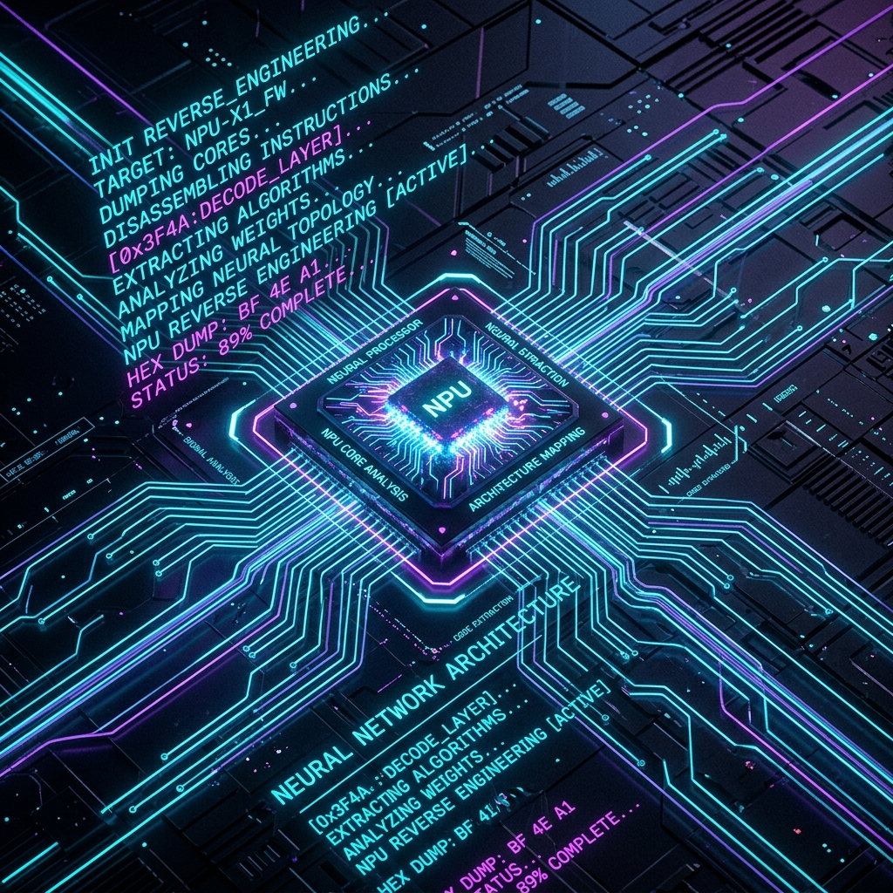

The NPU Journey Part 1: Taming the Axera AX8850 (And Why We Reverse-Engineered Everything for Nothing)

Edge Neural Processing Units (NPUs) represent a massive leap in deploying local, air-gapped LLMs for tactical offensive security operations. Recently, our team at the Threat Lab targeted the Radxa AI Core AX-M1 board, featuring the Axera AX8850 (LAMBERT) architecture, to use as a quick, low-power sanity-check system for our AI pipelines.
If you read our previous posts on this topic, you might remember an epic saga of reverse-engineering closed-source PyArmor binaries, building custom Python orchestrators with pexpect, writing dynamic memory flushers, and patching sitecustomize.py files to bypass compiler constraints.
We sounded like absolute wizards hacking the mainframe.
But we have a confession to make: We did all of that because we were fighting bad software, and we didn't realize it.
The Reality of "Bad Software"
When we first started building models for the AX8850, we encountered what looked like hard hardware blocks and closed-system protections:
- The
pulsar2compiler threw module resolution exceptions when targeting the LAMBERT architecture. - The
axllmserver would spew repetitive garbage loops ("factfactfact...") when serving models. - The native compiler refused to load HuggingFace models without crashing.
Our initial instinct was to brute-force our way through. We wrote Python wrappers to intercept the closed-source execution, built pseudo-terminals to feed data into the vendor CLI, and even patched the raw HuggingFace configuration JSONs dynamically.
But as we dug deeper into the core platform, we realized the truth: the hardware wasn't locked down. The vendor software was just profoundly buggy.
The True Culprits
- Broken Symlinks and Paths: The
pulsar2compiler wasn't intentionally blocking our builds. The bash wrapper scripts distributed by the vendor had broken path resolutions for${BASH_SOURCE[0]}, which broke internal Python imports. - Tokenizer Array Bugs: The dreaded infinite loop generation bug wasn't an NPU hardware limitation. The vendor's JSON parser simply crashed when a model's
eos_token_idwas defined as an array (e.g.,[1, 106]) instead of a single integer. - Cross-Architecture Confusion: We spent days trying to compile models explicitly for the AX8850, only to discover that the NPU natively, and perfectly, executes models compiled for the older AX650 architecture without any modifications.
Coming Clean
As researchers, it's easy to get tunnel vision when faced with an error message and jump straight into reverse engineering. We built a beautiful, over-engineered orchestrator to bypass problems that shouldn't have existed in the first place.
Now that we fully understand the software landscape of the Axera NPU environment, we are keeping our old writeups up as lessons in troubleshooting, but we've appended retrospective updates to them. We don't want anyone else to waste their time building PyArmor patches when they don't have to.
The AX8850 is a fantastic piece of silicon, and it serves perfectly as a quick sanity-check inference node for our offensive security tooling.
In Part 2, we show the clean, accurate step-by-step guide on how to tame this edge NPU with no reverse engineering required.
The NPU Journey Series
- Part 1: Taming the Axera AX8850 (And Why We Reverse-Engineered Everything for Nothing)
- Part 2: The True Guide to Deploying LLMs on the Axera AX8850
- Part 3: Night Shift Compilation Breakthroughs (AppArmor, LXC Ghost Memory)
- Part 4: Conquering the Final Boss (Strict JSONs, CMM Boot Windows, and Gateways)